UbiGraph XML-RPC Manual
Release alpha-0.2.4 June 2008
Ubigraph is a system for visualizing dynamic graphs. This version is shipped in binary form as a standalone server that responds to requests using XML-RPC. This makes it easy to use from C, C++, Java, Ruby, Python, Perl, and other languages for which XML-RPC implementations are available. Since XML-RPC uses TCP-IP, the server (which visualizes the graph) can be run on a different machine/operating system than the client (which is manipulating the graph). It is also possible to have multiple clients updating the graph simultaneously. (Note that for clients to be on different machines from the server, firewalls must be configured to allow traffic on port 20738.)
Quick Start
After downloading the release:
$ gunzip UbiGraph-....tgz $ tar xvf UbiGraph-....tar $ cd UbiGraph-... $ bin/ubigraph_server & (empty black window) $ cd examples/Python $ ./run_all.sh
If you're familiar with Python, a good place to start is examples/Python/ubigraph_example.py. This example illustrates the higher-level API for ubigraph in Python:

import ubigraph
U = ubigraph.Ubigraph()
U.clear()
x = U.newVertex(shape="sphere", color="#ffff00")
smallRed = U.newVertexStyle(shape="sphere", color="#ff0000", size="0.2")
previous_r = None
for i in range(0,10):
r = U.newVertex(style=smallRed, label=str(i))
U.newEdge(x,r,arrow=True)
if previous_r != None:
U.newEdge(r,previous_r,spline=True,stroke="dashed")
previous_r = r
Reporting problems
This is alpha software. Please help us (and other users) by reporting problems you encounter. Problems can be emailed to support@ubietylab.net. Please also see the suggestions on the web site about submitting bug reports.
Getting started
This version of the ubigraph software is shipped in binary form as a standalone server. Clients talk to the server using XML-RPC, a standard remote procedure call protocol that uses HTTP-POST requests to call methods. The method call and return results are encoded with XML. The use of XML-RPC makes it trivial to use Ubigraph with popular scripting languages such as Python and Ruby.
Starting and using the server
The server process must be started before any clients can connect to it. To do this, just run the ubigraph_server program found in the bin subdirectory of the distribution. You should be rewarded with a message ("Running Ubigraph/XML-RPC server.") and a new window which is empty and black.
You can now run the programs included with the distribution. In developing UbiGraph we were focussed on the layout algorithm, with the result that the GUI is still somewhat primitive. You can rotate the graph by holding the left mouse button and dragging. Dragging with the middle mouse button pans. There is a right-mouse button menu that will let you switch into fullscreen mode. A number of keystrokes are recognized:
| Key(s) | Function |
|---|---|
| ESC | Exit full-screen mode |
| ↑ and ↓ | Zoom in/out |
| ! | Zoom way out |
| @ | Zoom way in |
| ← and → | Start/increase/stop y-axis rotation |
| u, d | Start/increase/stop z-axis rotation |
| r | Reset vertices to random positions |
| +,- | Increase/decrease time step |
| h | Toggle Runge-Kutta/Euler step |
| p | Toggle serial/parallel |
| f,F | Decrease/increase friction |
| v | Toggle draw vertices |
| s | Toggle draw strain |
| S | Show performance stats |
The XML protocol layer
You shouldn't need to worry about the XML layer unless you are implementing your own client interface in some language that is not yet supported. However, if you're curious to see what the messages being sent to and from the server look like, set XMLRPC_TRACE_XML=1 in your environment before running ubigraph_server. Here is an example call-response pair, which creates a new edge from vertex 0 to vertex 9, which is given an edge-id 423265977 by the server.
XML-RPC CALL: <?xml version="1.0" encoding="UTF-8"?> <methodCall> <methodName>ubigraph.new_edge</methodName> <params> <param><value><i4>9</i4></value></param> <param><value><i4>0</i4></value></param> </params> </methodCall> XML-RPC RESPONSE: <?xml version="1.0" encoding="UTF-8"?> <methodResponse> <params> <param><value><i4>423265977</i4></value></param> </params> </methodResponse>
The basic API functions
The five functions shown below cover the basic operations. API functions are presented in C language syntax, but the way these are adapted to other languages is straightforward.
void ubigraph_clear(); int ubigraph_new_vertex(); int ubigraph_new_edge(int x, int y); int ubigraph_remove_vertex(int x); int ubigraph_remove_edge(int e);
ubigraph_clear resets the graph, deleting any vertices and edges that exist. It's a good idea to call this method at the beginning of any session, in case a previous client failed to clean up.
new_vertex creates a vertex, and returns its vertex-id (an integer). You need to remember this vertex-id to create edges with new_edge, which creates an edge between two vertices (specified by their vertex-ids), and returns its edge-id (an integer). To delete a vertex, call ubigraph_remove_vertex and supply its vertex-id; any edges touching the vertex are removed also. To delete an edge, call ubigraph_remove_edge and supply its edge-id. The remove methods return 0 on success, or -1 on failure (i.e., you tried to remove an edge or vertex that did not exist.)
Specifying vertex and edge ids
If you do not want to keep track of vertex or edge-id's, there is an alternate pair of API routines that allow you to specify the vertex-id and edge-id when creating vertices and edges:
int ubigraph_new_vertex_w_id(int id); int ubigraph_new_edge_w_id(int id, int x, int y);
Language Bindings
In the xmlrpc subdirectory of the distribution you can find bindings and/or examples of how to use the ubigraph server from various programming languages.
Python and Ruby are the easiest to get working, since XML-RPC is included in the standard libraries for these languages. For Java, you will need to install a .jar package for XMLRPC support. For C and C++ you will need to install the XMLRPC-C and libwww libraries.
Python
XML-RPC is included in the Python standard library. An example usage is shown below:
import xmlrpclib
# Create an object to represent our server.
server_url = 'http://127.0.0.1:20738/RPC2'
server = xmlrpclib.Server(server_url)
G = server.ubigraph
# Create a graph
for i in range(0,10):
G.new_vertex_w_id(i)
# Make some edges
for i in range(0,10):
G.new_edge(i, (i+1)%10)
Ubigraph is distributed with a collection of Python examples. You can run them all using the script run_all.sh in the examples/Python subdirectory.
Using Python interactively
Python provides an easy way to experiment with the API and styles. If you start an interactive Python session and paste in the first few lines above, you can then generate some vertices and play with their styles.
$ python
Python 2.3.5 (#1, Apr 25 2007, 00:02:14)
Type "help", "copyright", "credits" or "license" for more information.
>>> import xmlrpclib
>>> server = xmlrpclib.Server('http://127.0.0.1:20738/RPC2')
>>> G = server.ubigraph
>>> x = G.new_vertex()
>>> y = G.new_vertex()
>>> G.new_edge(x,y)
335979033
>>> G.set_vertex_attribute(x, 'color', '#ff0000')
0
>>> G.set_vertex_attribute(y, 'shape', 'torus')
0
>>> G.set_vertex_attribute(y, 'color', '#ffff40')
0
>>> G.set_vertex_attribute(x, 'label', 'This is red')
0
A more friendly Python API: ubigraph.py
In examples/Python you will find ubigraph.py, which provides a higher-level interface to ubigraph:
import ubigraph
U = ubigraph.Ubigraph()
U.clear()
x = U.newVertex(shape="sphere", color="#ffff00")
smallRed = U.newVertexStyle(shape="sphere", color="#ff0000", size="0.2")
previous_r = None
for i in range(0,10):
r = U.newVertex(style=smallRed, label=str(i))
U.newEdge(x,r,arrow=True)
if previous_r != None:
U.newEdge(r,previous_r,spline=True,stroke="dashed")
previous_r = r
Ruby
XML-RPC is included with Ruby. Here is an example program:
require 'xmlrpc/client'
server = XMLRPC::Client.new2("http://127.0.0.1:20738/RPC2")
for id in (0..9)
server.call("ubigraph.new_vertex_w_id", id)
end
for id in (0..9)
server.call("ubigraph.new_edge", id, (id+1)%10)
end
Rubigraph
Motohiro Takayama has written a nicer interface, Rubigraph, which hides the XMLRPC details:
require 'rubigraph' Rubigraph.init # initialize XML-RPC client. v1 = Vertex.new v2 = Vertex.new e12 = Edge.new(v1, v2) v1.color = '#003366' v2.shape = 'sphere' e12.label = 'edge between 1 and 2'
Rubigraph can be found in the subdirectory examples/Ruby/Rubigraph. It is distributed under an MIT license.
$ svn checkout http://svn.coderepos.org/share/lang/ruby/rubigraph
$ git clone git:://rubyforge.org/rubigraph.git
Perl
XML-RPC can be used with Perl via the Frontier::Client, available from CPAN as part of the Frontier-RPC package.
#!/usr/bin/perl
use Frontier::Client;
my $client = Frontier::Client->new( url => 'http://127.0.0.1:20738/RPC2';);
$client->call('ubigraph.clear', 0);
my $a = $client->call('ubigraph.new_vertex');
my $b = $client->call('ubigraph.new_vertex');
$client->call('ubigraph.new_edge', $a, $b)
Java
You will need to install Apache XML-RPC for Java, which can be obtained from http://ws.apache.org/xmlrpc/. The .jar files in the lib subdirectory of the Apache XML-RPC binary distribution should be placed in your usual CLASSPATH.
In the xmlrpc/Java subdirectory of the ubigraph distribution you will find ubigraph.jar, which provides a class org.ubiety.ubigraph.UbigraphClient that hides the xmlrpc details. Javadoc for this class can be found in the xmlrpc/Java/html subdirectory of the distribution. An example use is shown below:
import org.ubiety.ubigraph.UbigraphClient;
public class Example {
public static void main(String[] args) {
UbigraphClient graph = new UbigraphClient();
int N = 10;
int[] vertices = new int[N];
for (int i=0; i < N; ++i)
vertices[i] = graph.newVertex();
for (int i=0; i < N; ++i)
graph.newEdge(vertices[i], vertices[(i+1)%N]);
}
}
C
An API is provided for C and C++ that hides the underlying XML-RPC implementation. Once you have this API built, using it is very simple, e.g.:
#include <UbigraphAPI.h>
int main(int const argc, const char ** const argv)
{
int i;
for (i=0; i < 10; ++i)
ubigraph_new_vertex_w_id(i);
for (i=0; i < 10; ++i)
ubigraph_new_edge(i, (i+1)%10);
sleep(2);
ubigraph_clear();
}
Building the C language API
The xmlrpc/C subdirectory of the ubigraph distribution contains some things you will need to build. Here is how to proceed:
- If you do not already have it, you will need to install
XML-RPC for C/C++ (Xmlrpc-c), which can be obtained
from
http://xmlrpc-c.sourceforge.net/.
☞ Ubuntu: sudo apt-get install libxmlrpc-c3-dev
☞ Fedora: you can install the package xmlrpc-c-devel-1.13.8-2.fc9
☞ The following should download and install xmlrpc-c on most platforms:$ svn checkout https://xmlrpc-c.svn.sourceforge.net/svnroot/xmlrpc-c/stable xmlrpc-c $ cd xmlrpc-c $ ./configure --disable-libwww-client --enable-curl-client $ make -i $ sudo make install
- In the xmlrpc/C subdirectory of the ubigraph distribution, you will need to do "make libubigraphclient" to build a library (libubigraphclient.a) which provides the C language API.
- When linking your C programs to the C language API,
these libraries will be required:
-lubigraphclient -lxmlrpc_client -lxmlrpc -lxmlrpc_util -lxmlrpc_xmlparse -lxmlrpc_xmltok
The xmlrpc libraries should be installed in one of the standard library paths (e.g., /usr/include/lib). For the linker to find libubigraphclient.a, you will need to either copy this to a standard library path, or include the path with a -L option.☞ If you get undefined symbols that start with _HT...., then your xmlrpc-c libraries were built with libwww transport enabled. You will need to make sure libwww is installed, and link with:-lwwwapp -lwwwfile -lwwwhttp -lwwwnews -lwwwutils -lwwwcache -lwwwftp -lwwwinit -lwwwstream -lwwwxml -lwwwcore -lwwwgopher -lwwwmime -lwwwtelnet -lwwwzip -lwwwdir -lwwwhtml -lwwwmux -lwwwtrans -lmd5 -lxmlparse -lxmltok
C++
Follow the instructions for C, above. Use extern "C" when including the header file, e.g.:
extern "C" {
#include <UbigraphAPI.h>
}
int main(int const argc, const char ** const argv)
{
for (int i=0; i < 10; ++i)
ubigraph_new_vertex_w_id(i);
for (int i=0; i < 10; ++i)
ubigraph_new_edge(i, (i+1)%10);
sleep(2);
ubigraph_clear();
}
Vertex Attributes
Vertex attributes can be set with the following function:
int ubigraph_set_vertex_attribute(int x,
string attribute, string value);
However, if you have a large number of vertices with similar attributes, you should use style-ids, as described later.
| Attribute | Values | Default |
|---|---|---|
| color | String of the form "#000000" specifying an rgb triple; or an integer such as "31" to use the built-in palette. | "#0000ff" |
| shape |
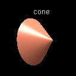

 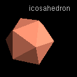
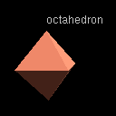
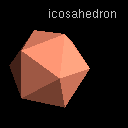
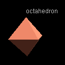
 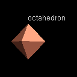
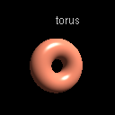
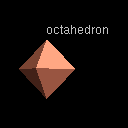
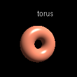
Use "none" to draw nothing. ☞ Cones, spheres, and tori can be expensive to draw. For graphs with many vertices, you can sometimes improve performance by switching to simpler shapes.
☢ Ticket#340745 The image of the tetrahedron actually shows an octahedron
|
"cube" |
| shapedetail |
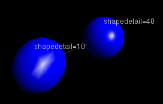
Indicates the level of detail with which the shape should be rendered. This is relevant only for the sphere, cone, and torus shapes,
which are described by polygons. Performance may improve for large graphs if the level of detail is reduced. Sensible values from 5 to 40. If shapedetail=0, the level of detail varies with the framerate.
|
10 |
| label | A string to be displayed near the vertex. | "" |
| size |
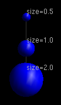
Real number indicating the relative size of the shape.
This is for rendering only, and does not affect layout.
|
1.0 |
| fontcolor | String of the form "#000000" specifying an rgb triple, or an integer to use the built-in palette. | "#ffffff" |
| fontfamily | String indicating the font to be used for the label.
Recognized choices are "Helvetica" and "Times Roman".
Only the combinations of family and size shown below
are recognized; other choices of family and size
result in a best guess. 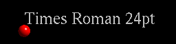
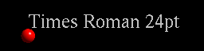
|
Helvetica |
| fontsize | Integer giving the size of the font, in points, used for the label. | 12 |
| visible | Whether this vertex is drawn.
☞ You can hide and reveal aspects of the graph by manipulating
the "visible" attribute of vertex and edge styles. This trick can
also be used to hide the construction and layout of graphs.
|
true |
The following vertex attributes are intended for eventual inclusion in an "Ubigraph Pro" (i.e., not free) version. Please be cautioned that they may disappear from the free version in the future.
| Attribute | Values | Default |
|---|---|---|
| callback_left_doubleclick | Action to take when the user double-clicks the left mouse
button on the vertex. Currently the only supported action
is a URL such as "http://hostname.net/method_name". This
will result in an XMLRPC call being made, with the vertex-id
passed as the only parameter.
☞ Use of this attribute is illustrated in
examples/Python/callback.py and
examples/Python/callback_webcrawler.py.
|
"" |
Edge attributes
Edge attributes can be set with the following function:
int ubigraph_set_edge_attribute(int x,
string attribute, string value);
The table below shows available edge attributes.
| Attribute | Values | Default |
|---|---|---|
| arrow | If true, an arrowhead is drawn. | "false" |
| arrow_position |
On an edge (x,y), if arrow_position=1.0 then the arrowhead is drawn
so that the tip is touching y. If arrow_position=0.0 the beginning
of the arrowhead is touching x. If arrow_position=0.5 the arrowhead
is midway between the two vertices.
☢ Ticket#457433 Arrowhead tips do not exactly meet vertex shapes
|
0.5 |
| arrow_radius | How thick the arrowhead is. | 1.0 |
| arrow_length | How long the arrowhead is. | 1.0 |
| arrow_reverse | If true, the arrowhead on an edge (x,y) will point toward x. | "false" |
| color | String of the form "#000000" specifying an rgb triple, or an integer to use the built-in palette. | "#0000ff" |
| label, fontcolor, fontfamily, fontsize | See vertex style attributes.
☢ Ticket#114962 labels on spline edges are placed incorrectly
|
|
| oriented | If true, the edge tries to point 'downward'.
☞ This replaces the "gravity" setting in previous versions of the
software.
☢ Ticket#773085 spline edges ignore oriented attribute
☢ Ticket#302946 Feature: orientation vector for oriented edges. This will allow you to specify the desired direction of an oriented edge.
|
"false" |
| spline | If true, a curved edge is rendered. A curved edge tries to avoid
other curved edges in the layout, which can result in cleaner-looking
layouts.
☞ Spline edges are more expensive to layout and render. If you run into performance problems with big graphs, consider turning splines off.
|
"false" |
| showstrain | If true, edges are colored according to their relative length. Longer than average edges are drawn in red. Edges of average length are drawn in white. Shorter than average edges are drawn in blue. | "false" |
| stroke | The stroke style to be used: one of "solid", "dashed", "dotted", or "none". If the "none" style is used, no line is drawn. However, any decorations of the edge, e.g., arrowhead and label, will be drawn. | "solid" |
| strength | How much the edge will pull its vertices together.
For edges that are drawn but do not affect layout, use
"0.0".
☞ You can hide and reveal structural aspects of the graph by manipulating
the "strength" attribute of edge styles. See examples/Python/edgestyles.py
☢ Ticket#437045 spline edges ignore strength attribute
|
"1.0" |
| visible | Whether the edge is drawn. | "true" |
| width | How wide the edge is. | "1.0" |
Style-ids and the style model
If you wish to change the style of a large number of vertices in a similar way, you should consider using style-ids. This allows you to predefine a vertex style (e.g., red cubes), and apply it to a large number of vertices.
There are eight functions in the API for managing styles:
int ubigraph_new_vertex_style(int parent_styleid);
int ubigraph_new_vertex_style_w_id(int styleid, int parent_styleid);
int ubigraph_set_vertex_style_attribute(int styleid,
string attribute, string value);
int ubigraph_change_vertex_style(int x, int styleid);
int ubigraph_new_edge_style(int parent_styleid);
int ubigraph_new_edge_style_w_id(int styleid, int parent_styleid);
int ubigraph_set_edge_style_attribute(int styleid,
string attribute, string value);
int ubigraph_change_edge_style(int e, int styleid);
The default vertex style
All new vertices begin with a style-id of 0, which is the default vertex style. To change attributes of all the vertices in the graph, you can use ubigraph_set_vertex_style_attribute(0, attribute, value). For example:
# Make all the vertices red. G.set_vertex_style_attribute(0, "color", "#ff0000")
Making new styles
You can create a new vertex style with the function ubigraph_new_vertex_style(parent_styleid), which derives a new style from an existing style. You can always provide 0 for the parent_styleid, which will derive a new style based on the default vertex style. For example:
mystyle = G.new_style(0) G.set_vertex_style_attribute(mystyle, "shape", "cube") mystyle2 = G.new_style(mystyle) G.set_vertex_style_attribute(mystyle2, "size", "0.3")
This creates a new style id, stored in the variable
mystyle,
which is derived from the default vertex style. Another
style, mystyle2, is derived from mystyle.
It might be helpful to think of derived styles in terms
of equations such as:
mystyle = default vertex style + [shape=cube]
mystyle2 = mystyle + [size=0.3]
When you change a style attribute, it affects all vertices
with that style, and also all derived styles that have not
changed that attribute. In this sense styles are similar to
inheritance in object-oriented languages,
cascading style sheets, InDesign styles, etc.
If for example we did:
G.set_vertex_style_attribute(0, "size", "1.5")
This would make the size 1.5 for both the default vertex style and mystyle.
The order in which styles are created and attributes set does not matter. That is, when you create a new style, you do not take a snapshot of the style from which it is derived. Changes made to a style continues to affect styles derived from it.
Setting a vertex's style
To set the style of a vertex, use the change_vertex_style(vertex-id, style-id) function.
Edge styles
Edge styles work the same way as vertex styles. Setting attributes of edge style 0 will change the default edge attributes. For example, to make spline edges the default:
G.set_vertex_style_attribute(0, "spline", "true")
Performance Issues
If you are finding that API calls are slow (e.g., building a graph takes a long time), the problem is probably in the client XMLRPC implementation. Ubigraph can respond to between 105 to 106 API calls per second when called directly (without XMLRPC). When called via XMLRPC in loopback mode using a decent XMLRPC client, it can sustain 1-2 thousand API calls per second. If you are seeing rates substantially lower than this, there is likely a performance problem in your client XMLRPC implementation.
There are some simple changes that can result in drastic improvements (or losses) in performance. The essential points are:
- If you are using Mac OS X, make sure you use the URL http://127.0.0.1/RPC2 instead of http://localhost/RPC2. (Mac OS X has numerous pernicious performance problems, and loopback sockets are one of them.)
- If you are using a language other than Java or C, then consider using the C API via a SWIG wrapper. This will bypass any problems caused by naive XMLRPC client implementations.
- Make sure your XMLRPC client is using TCP_NODELAY or TCP_CORK.
- For big graphs, use a multicore machine and a fast graphics card.
Example performance figures: Mac OS X 10.4
Here are some benchmark results for creating a cube graph (N=1000 vertices). These performance numbers are from an 8-core Mac Pro (2x Quad-Core Intel Xeon, 3 GHz, 8Gb RAM) running Mac OS X 10.4.11 (Darwin 8.11.1).
| Version | Wall time to construct cube graph (3701 API calls) | API calls per second |
|---|---|---|
| Python, URL=http://localhost/RPC2 | 5:45 (yes, five minutes!) | 11 |
| Python, URL=http://127.0.0.1/RPC2 | 8.1 s | 457 |
| Python, using SWIG + ubigraph C API (xmlrpc-c) | 2.0 s | 1850 |
| C API (xmlrpc-c) | 1.7 s | 2200 |
| Direct linking with UbiGraph server (not possible with the free version) | 0.005 s | 740000 |
Example performance figures: Ubuntu 64-bit 8.04
These performance numbers are for Ubuntu running on the Mac Pro mentioned above using VMWare and 1-2 virtual processors. Your mileage may vary.
| Version | Wall time to construct cube graph (3701 API calls) | API calls per second |
|---|---|---|
| Python (xmlrpclib), 1 CPU | 6.2 | 600 |
| Python (xmlrpclib), 2 CPUs | 3.5 s | 1060 |
| C API (xmlrpc-c), 1 CPU | 2.3 s | 1600 |
| C API (xmlrpc-c), 2 CPUs | 2.1 s | 1700 |
| Direct linking with UbiGraph server (not possible with the free version) | 0.004 s | 925000 |
Performance bottlenecks
Performance bottlenecks can arise in these places:
- Bottlenecks in the client side XMLRPC implementation:
-
DNS: some naive XMLRPC implementations will do DNS lookup for
every XMLRPC call. For example, in Mac OS X, using the URL
"http://localhost:20738/RPC2" instead of "http://127.0.0.1:20738/RPC2"
appears to result in a name lookup on every
ubigraph API call (i.e. the kernel does a name lookup when
the connect() system call is made.) The result
is that each API call takes about 1/10th of a second.
☞ Solution: (a) use 127.0.0.1 (or ::1 in IPv6) instead of localhost; (b) if you are connecting to a remote host, do name lookup and cache the IP address.
-
Nagling: by default, sockets in unix try to bunch up data into
larger packets, to avoid congestion problems. This can result in
delays in sending XMLRPC requests. Smart implementations of XMLRPC
set TCP_NODELAY (or TCP_CORK); for example, Xmlrpc-C does this.
The python xmlrpclib does not. Ultimately the workaround is to
submit a patch for xmlrpclib.py to turn on TCP_NODELAY for
the socket, or otherwise flush the socket.
For more information see the
Wikipedia
article.
☞ If you encounter performance problems, check that your XMLRPC client implementation is using TCP_NODELAY.
- Connect/tear down: a really naive XMLRPC implementation will open a new TCP-IP connection for each RPC and then tear it down.
-
Sending/receiving one character at a time. This generally means
one system call per character. For example, running
ktrace on python 2.5 under Mac OS X
shows that xmlrpclib (and/or httplib) retrieve the
HTTP headers from the server one character at a time.
In the example below a set_edge_attribute call is made,
and then the response from the server ("HTTP/1.1 200 OK...")
is retrieved one character at a time.
14682 Python CALL sendto(0x3,0x62e8f4,0x11c,0,0,0) 14682 Python GIO fd 3 wrote 284 bytes "<?xml version='1.0'?> <methodCall> <methodName>ubigraph.set_edge_attribute</methodName> <params> <param> <value><int>2061447965</int></value> </param> <param> <value><string>arrow</string></value> </param> <param> <value><string>True</string></value> </param> </params> </methodCall> " 14682 Python RET sendto 284/0x11c 14682 Python CALL recvfrom(0x3,0xcc694,0x1,0,0,0) 14682 Python GIO fd 3 wrote 1 byte "H" 14682 Python RET recvfrom 1 14682 Python CALL recvfrom(0x3,0xe8294,0x1,0,0,0) 14682 Python GIO fd 3 wrote 1 byte "T" 14682 Python RET recvfrom 1 14682 Python CALL recvfrom(0x3,0xe8934,0x1,0,0,0) 14682 Python GIO fd 3 wrote 1 byte "T" 14682 Python RET recvfrom 1 14682 Python CALL recvfrom(0x3,0xe8974,0x1,0,0,0) 14682 Python GIO fd 3 wrote 1 byte "P" 14682 Python RET recvfrom 1 14682 Python CALL recvfrom(0x3,0xe89d4,0x1,0,0,0) 14682 Python GIO fd 3 wrote 1 byte "/" 14682 Python RET recvfrom 1 14682 Python CALL recvfrom(0x3,0xe8a74,0x1,0,0,0) 14682 Python GIO fd 3 wrote 1 byte "1" - If you are unable to solve API performance problems by using, e.g., SWIG and the C API, consider using XMLRPC multicalls.
-
DNS: some naive XMLRPC implementations will do DNS lookup for
every XMLRPC call. For example, in Mac OS X, using the URL
"http://localhost:20738/RPC2" instead of "http://127.0.0.1:20738/RPC2"
appears to result in a name lookup on every
ubigraph API call (i.e. the kernel does a name lookup when
the connect() system call is made.) The result
is that each API call takes about 1/10th of a second.
- Bottlenecks in the graph layout algorithm. You can press the space bar to
pause the layout algorithm. If the graph builds much faster
with the layout paused, here are some ways you can speed up
the layout:
- Don't use spline edges.
- Use a multicore machine.
- Bottlenecks in rendering.
To figure out if rendering is the bottleneck, press the "S" key to
show the status line, and press "%" (percent) to toggle rendering.
Watch the "fps" (frames per second) figure. If for example you get
4 fps when rendering, and this jumps to 50 fps when you turn off
rendering, then rendering is the bottleneck.
Here are things you can do to speed up rendering:
- Turn off vertex rendering by pressing the "v" key.
- Don't use arrowheads, spheres, cones, or torii, all of which require quadrics.
- Try using a smaller window to display the graph.
- Make sure you are using hardware accelerated OpenGL.